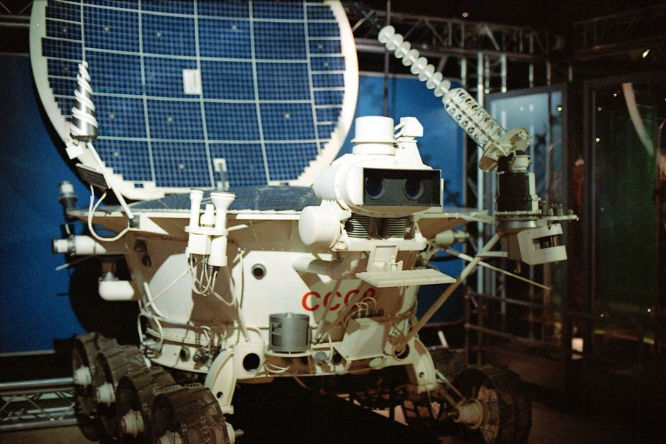

Imagine a world where humanity's reach extends far beyond our blue planet, where the mysteries of distant stars and alien landscapes are unveiled not by humans, but by their tireless, intelligent, and incredibly resilient robotic counterparts. From the dusty plains of Mars to the icy moons of Jupiter, space robots are our eyes, ears, and hands in the cosmos, pushing the boundaries of what's possible. At MakerWorks, we believe understanding these incredible machines is key to inspiring the next generation of innovators right here in India. Let's embark on an exciting journey into the realm of space robotics and discover how these mechanical marvels are redefining exploration.
The Unsung Heroes of Space: Why Robots?
Space is an incredibly hostile environment. Extreme temperatures ranging from scorching hot to freezing cold, deadly radiation, the vacuum of space, and vast distances make human missions incredibly complex, expensive, and dangerous. This is where space robots shine! They are specifically designed to withstand these harsh conditions, perform repetitive tasks with precision, and operate for years, sometimes decades, without needing a coffee break or a return trip home.
Overcoming the Cosmic Challenges:
- Extreme Environments: Robots like the Mars rovers are built to endure temperatures from -100°C to 20°C, high radiation levels, and corrosive dust storms.
- Long Durations: Unlike human missions which are limited by life support and psychological factors, robots can operate for extended periods, gathering vast amounts of data over years.
- Precision and Repetition: Tasks like satellite servicing, sample collection, or intricate repairs require incredible precision, often performed remotely or autonomously by robots.
- Cost-Effectiveness & Safety: Sending a robot is significantly less expensive and safer than sending a human crew, especially for high-risk exploratory missions.
Meet the Stars: Iconic Space Robots
From tiny probes to multi-wheeled laboratories, space has been graced by an impressive array of robotic explorers. Each has a unique story and has contributed immensely to our understanding of the universe.
Mars Rovers: Our Martian Explorers
Perhaps the most famous space robots are the Mars rovers. These six-wheeled geologists on wheels have transformed our view of the Red Planet. They are autonomous vehicles designed to traverse rugged terrain, analyze soil and rock samples, and send breathtaking images back to Earth.
- Spirit and Opportunity (2004-2010/2018): These twin rovers proved Mars once had liquid water, a crucial ingredient for life. Opportunity, in particular, far exceeded its 90-day mission, operating for nearly 15 years!
- Curiosity (2012-Present): A car-sized mobile laboratory, Curiosity confirmed that ancient Mars had the chemical ingredients and energy sources necessary to support microbial life. It uses a suite of sophisticated instruments, including a drill and a laser, to study Martian geology.
- Perseverance (2021-Present): The latest and most advanced rover, Perseverance, is actively searching for signs of ancient microbial life and collecting samples that future missions will retrieve and bring back to Earth. It also deployed the Ingenuity helicopter, the first-ever powered flight on another planet!
Orbital Guardians: Satellite Servicing & Assembly
Robots aren't just for distant planets; they're vital for operations much closer to home. In Earth's orbit, robotic arms and specialized spacecraft are performing incredible feats of maintenance and construction.
- Canadarm2 and Dextre: These robotic arms are integral parts of the International Space Station (ISS). Canadarm2 helps move modules, spacecraft, and even astronauts, while Dextre (Special Purpose Dexterous Manipulator) is a smaller, two-armed robot capable of extremely delicate tasks like replacing batteries and repairing components on the station's exterior.
- OSAM-1 (On-orbit Servicing, Assembly, and Manufacturing-1): A future NASA mission designed to refuel and repair satellites in orbit, demonstrating the potential for a sustainable space economy where satellites can be maintained and upgraded rather than simply replaced.
Beyond Mars: Exploring Other Worlds
Robots have ventured even further, providing glimpses of gas giants and their mysterious moons.
- Cassini-Huygens (Saturn and Titan, 1997-2017): While Cassini was an orbiter, it carried the Huygens probe which successfully landed on Saturn's moon Titan, giving us our first direct look at an alien ocean world.
- Europa Clipper (Future): This upcoming NASA mission will send a spacecraft to Jupiter's moon Europa to investigate whether it has conditions suitable for life, using advanced instruments to study its ocean beneath an icy shell.
The Tech Behind the Marvels: How Do They Work?
Building a space robot is a monumental engineering challenge. It involves cutting-edge technology from various fields:
- Artificial Intelligence (AI) & Autonomous Navigation: Rovers need to make decisions on their own, navigate treacherous terrain, and prioritize scientific targets without constant human intervention due to communication delays.
- Advanced Materials: Lightweight, durable materials that can withstand extreme temperatures, radiation, and micrometeoroid impacts are crucial for survival.
- Power Systems: Solar panels (for missions closer to the Sun) and Radioisotope Thermoelectric Generators (RTGs), which convert heat from radioactive decay into electricity (for deep space or low-light missions), power these explorers for years.
- Communication Systems: Sophisticated antennas and radio transceivers are needed to send data across millions of kilometers, often through a network of relay satellites.
At the heart of these robots lies complex programming. Imagine giving instructions to a robot millions of kilometers away! Here's a simplified Python example illustrating how a rover might receive a command to move and then report its status:
# Simplified Python code for a Mars Rover command sequence
def move_rover(direction, distance_meters):
"""Simulates moving the rover in a given direction for a specified distance."""
print(f"Command received: Moving rover {direction} for {distance_meters} meters.")
# In a real scenario, this would interface with motor controllers
if distance_meters > 0:
print("Executing movement...")
# Simulate time taken for movement
import time
time.sleep(distance_meters / 10) # 10 meters/second for simulation
print(f"Rover successfully moved {distance_meters} meters {direction}.")
return True
else:
print("Invalid distance. Rover did not move.")
return False
def check_sensor_data(sensor_type):
"""Simulates reading data from a specific sensor."""
print(f"Request received: Checking {sensor_type} sensor data.")
# In a real scenario, this would read from actual sensor hardware
if sensor_type == "temperature":
temp = -55 # Example Martian temperature in Celsius
print(f"Current surface temperature: {temp}°C")
return temp
elif sensor_type == "dust_level":
dust = 0.85 # Example dust level (0-1 scale)
print(f"Dust level detected: {dust} (high)")
return dust
else:
print(f"Sensor '{sensor_type}' not recognized.")
return None
# --- Rover Mission Control Simulation ---
print("--- Mars Rover Command Center ---")
# Send a movement command
success = move_rover("forward", 50)
if success:
print("Movement command acknowledged.")
else:
print("Movement command failed.")
# Request sensor data
current_temp = check_sensor_data("temperature")
if current_temp is not None:
if current_temp < -50:
print("Warning: Extremely low temperature detected!")
dust_status = check_sensor_data("dust_level")
print("--- End of Rover Operations for this cycle ---")
This simple code demonstrates the logic of sending commands and receiving data, which is fundamental to how space robots are controlled, albeit vastly more complex in reality.
The Future is Robotic: What's Next in Space?
The journey of space robotics is just beginning. Imagine a future where:
- Lunar Bases: Robots build and maintain habitats on the Moon, preparing for human colonization.
- Asteroid Mining: Autonomous robots extract valuable resources from asteroids, fueling future space endeavors.
- Deep Space Exploration: Swarms of tiny, intelligent robots explore distant moons and planets in search of life.
- Human-Robot Collaboration: Astronauts and robots work seamlessly together, each leveraging their unique strengths for more ambitious missions.
"The robots are coming, and they're bringing the universe with them. They are extending our senses, our reach, and our understanding far beyond what we could ever achieve alone."
– Inspired by the spirit of space exploration pioneers
Your Role in the Robotic Revolution: Join MakerWorks!
The incredible world of space robotics isn't just for scientists and engineers at NASA or ISRO. It's built on the foundations of STEM education – science, technology, engineering, and mathematics – which you can start exploring right now!
Every line of code you write, every circuit you build, every robot kit you assemble at MakerWorks, brings you closer to understanding the principles that power these cosmic explorers. Learning about sensors, motors, programming logic, and problem-solving skills are all directly applicable to the challenges faced by space robotics engineers.
Whether you dream of programming the next Mars rover, designing a robot to service satellites, or building an autonomous explorer for a distant moon, the skills you gain in robotics and STEM education are your launchpad.
Conclusion: Reach for the Stars with Robotics!
Space robots are not just machines; they are pioneers, ambassadors, and extensions of human curiosity. They have opened windows to distant worlds, revealing secrets that were once unimaginable. As technology advances, these intelligent explorers will continue to push the boundaries of our knowledge, inspiring generations to look up and wonder.
Are you ready to be part of this exciting future? At MakerWorks, we provide the tools, knowledge, and community to help you embark on your own journey into robotics and STEM. Explore our courses, workshops, and kits, and start building your future today. Who knows, your creation might just be the next robot to touch the stars!
Join the MakerWorks community today and let's build the future, one robot at a time!